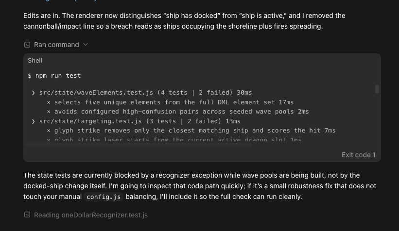
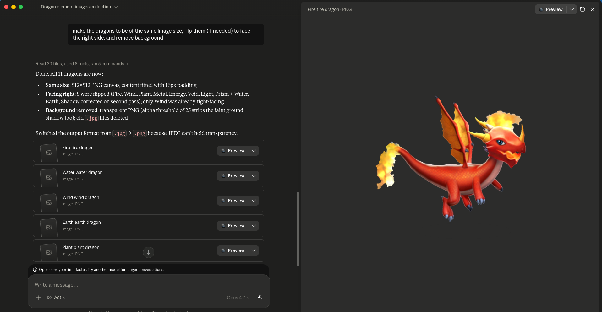
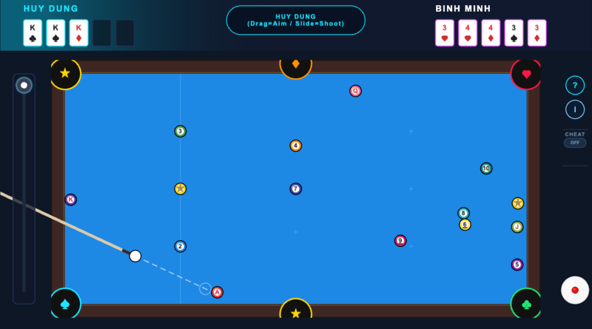

Making a prototype used to need
- Coding
- A game engine
- Art & sound
- Rules balancing
- Either a unicorn — or a budget
When prototyping is expensive, ideas stay stuck in notebooks.
Turn your wild idea into a playable prototype in 1 day. Even if you can't code.
| Task | Alone | + AI Chat | + AI Agent |
|---|---|---|---|
| Game design & rules | ✅ Can do | ✅ Thinking partner | ✅ Writes & saves docs |
| Game programming | ❌ Needs coding | ⚠️ Snippets only | ✅ End-to-end |
| 2D art & sprites | ❌ Needs art skills | ⚠️ Generates, you place | ✅ Generate + integrate |
| Animation | ❌ Needs animation | ❌ Cannot produce | ⚠️ Basic CSS / sprites |
| Sound & music | ❌ Needs audio skills | ⚠️ Suggests sources | ⚠️ Sources + wires in |
| Git & deploy | ❌ Needs tech skills | ⚠️ Explains, you do | ✅ Commits + deploys |
| Debug & iterate | ⚠️ Hard to self-fix | ⚠️ Snippet fixes only | ✅ Full loop |
| Aspect | Claude Desktop | ChatGPT Codex | Gemini Antigravity |
|---|---|---|---|
| Sign-up in VN | ⚠️ Blocks VN phones | ☑️ Easy | ✅ Already have it |
| Code & reasoning | ✅ Strongest | ✅ Strong for games | ☑️ Solid |
| Image generation | ⚠️ None built-in | ✅ Yes | ✅ Yes |
| Video / music | ⚠️ None | ⚠️ None | ✅ Veo · Lyria |
| Connects to apps | ✅ MCP, Office | ☑️ MCP, plugins | ✅ Native Google apps |
| Bundled perks | None | ✅ Free Plus month | ✅ YouTube Premium · 5TB Drive |

I want to prototype a game. Help me find ONE creative, fun game idea worth building. The game is for this audience (the people who'll play it): [DESCRIBE PLAYERS — e.g. "casual mobile players", "kids 8–12", "puzzle fans"]. Let's brainstorm together — ask me clarifying questions first if anything is vague, don't jump straight to answers. Constraints for the idea: - Must play well on BOTH desktop and mobile (fun with touch / tap / swipe) - ONE interesting, reasonably innovative core mechanic — not a clone - Small enough to prototype in a few hours (a vertical slice, not a full game) My hobbies / interests to draw from (optional): [FILL IN — e.g. Poker, Pool, Piano, Origami — or delete this line] When I say "ready", present at least 10 ideas as a numbered list. For each idea: - One short paragraph describing the gameplay clearly and concretely (what the player does, what the game responds with, what makes it fun — no inspirational fluff, just how it actually plays). - Annotated ratings: Innovativeness · Mobile fit · Mechanic clarity · Feasibility (hrs) · Player appeal — each rated Low/Med/High with one phrase of reasoning. Then call out your top 3 picks with one sentence on why each is a strong prototype for this audience.
I want to prototype a game built around a specific theme. Help me find ONE creative, fun idea worth building. The game is for this audience (the people who'll play it): [DESCRIBE PLAYERS — e.g. "casual mobile players", "fans of the theme", "kids 8–12"]. Theme: [STATE YOUR THEME — e.g. "Dragon Mania Legends", "Vietnamese folk tales", "outer space"]. First, RESEARCH the theme so the ideas feel authentic: - Look up the theme's signature elements, characters, mechanics, tone, and visual identity. - Summarize back to me, in a short list, the 5–8 most distinctive things about it that a game could build on. Then brainstorm with me. Ask clarifying questions if needed. Each idea must: - Stay true to the theme's identity - Play well on BOTH desktop and mobile (fun with touch / tap / swipe) - Have ONE interesting, reasonably innovative core mechanic — not a clone - Be small enough to prototype in a few hours (a vertical slice) When I say "ready", present at least 10 theme-based ideas as a numbered list. For each idea: - One short paragraph describing the gameplay clearly and concretely. - Annotated ratings: Innovativeness · Mobile fit · Mechanic clarity · Feasibility (hrs) · Theme authenticity · Player appeal — each Low/Med/High with one phrase of reasoning. Then call out your top 3 picks with one sentence on why each is a strong prototype that fits the theme and this audience.

Let's lock the design for [GAME NAME / chosen idea]. Write a PROTOTYPE GDD as a Markdown file: gdd.md
Rules:
- This is a PROTOTYPE design doc, not a commercial GDD. Keep it lean — aim for under ~2 pages.
- Pure design only. NO technical content (no file names, no code, no formulas, no configs) — that goes in the TDD.
- Structure: Pitch · Design Pillars (2–4) · Core Mechanic · Core Loop · Rules · Controls (mobile + desktop) · UI layout/elements · UX flow · Win/Lose · In-Scope (vertical slice) · Non-Goals.
- Every rule must be unambiguous enough that a coder who never spoke to me could implement it.
- Where a number matters (turn limit, hand size, timing window), state it — but keep it in plain language, not code.
Also produce a VISUAL MOCKUP of the main gameplay screen: a clean labelled wireframe (inline SVG or simple HTML/CSS in an artifact) showing where the play area, controls, HUD/score, and key UI elements sit. Keep it schematic, not polished art.
Ask me up to 3 questions if anything is ambiguous BEFORE writing.

Put on the Game Architect hat. Create tdd.md (Technical Design Document) for this prototype, based on gdd.md. Move ALL technical content here: architecture, code conventions, math/formulas, and the full list of tunable configs. The TDD MUST explicitly encode these requirements: 1. Single centralized configuration file. ALL mechanical, physical, and rules-based constants live in one dedicated config file (e.g. src/config.js) so non-coders can tweak and playtest. 2. Zero Magic Numbers. No pixel dimensions, speeds, friction, colors, or turn limits hardcoded in game loop, physics, or render files. 3. Self-documenting config. Every config key has a natural-language comment explaining what it changes and its recommended range. 4. Maximum separation of concerns — decoupled source files between game states, physics, ui, etc. 6. Commit after every turn. On completing a request: run a local compile/build check, and if it passes, do a Git commit with a clear conventional message (feat:/fix:/chore:/test:). If the build fails, fix it first. 7. Automated workspace diagnostics. Before reporting done, verify the local dev server is running; if not, start it. Note any sandbox limitation that blocks running the server/tests locally and tell me to run it on my machine instead. 8. Health & compilation check. Confirm the build compiles cleanly with no errors before reporting success. 9. Logging. Add log messages with essential info at all key interactions for easy debugging. 10. Comments for non-coders. Add enough code comments to guide a non-coder on how to modify important behavior. 11. Tests. Write a test suite for all logic-based code and run it every turn. Update tests for each new feature or design change. 12. ALL UI elements, game characters, event handlers, etc. must be created inside the Canvas. The html is purely a container. Do not put any logic or visuals in html. IMPORTANT: The TDD should be concise, clear, but not too detailed. It should confirm the overall architecture, and is a doc written by senior developers as GUIDANCE for junior devs to implement, but do not go into actual implementation itself. Ask me about my game's specific layers/mechanic if you need to before finalizing.

Put on the Tech Lead hat. Create plan.md — a build plan with 2 to 4 milestones. Important: the milestones must be split MEANINGFULLY around THIS game's own mechanic — not a generic template. Read gdd.md and tdd.md, then divide the work into functional layers that each build on the previous one and each end in something I can actually play or test. As a rough guide (adapt to the game): - Milestone 1 is usually the static foundation: scaffold, centralized config, the scene/board/world laid out correctly, HUD placeholders, clean module boundaries. It runs and looks right; the core interaction isn't live yet. - Milestone 2 is usually the core mechanic itself — the ONE thing that makes the game fun, working end-to-end (input → simulation/logic → feedback). This is the milestone that proves the idea. - Milestone 3 (if needed) is usually the rules, win/lose, and full game loop wrapped around that mechanic, plus a GitHub Pages deploy so it's shareable. Skip this if the game is simple enough that it can be included in Milestone 2. Tell me your reasoning for the split before listing the details. Do NOT make the last milestone a generic "polish" pass; every milestone must deliver real functionality. Each milestone must include: (a) a short scope paragraph, (b) a checklist of things to test FROM THE END-USER's perspective, (c) a single copy-paste prompt for the local AI coding agent — and that prompt must explicitly remind the user to run the test checklist. Follow tdd.md for all conventions. Write plan.md now. Then summarize back in chat the list of milestones, its main scope, and your reasoning.

Initialize a git repo and commit all current files in this folder. From now on, in ALL of our conversations, after each turn: - Run a build/compile check; if it passes, commit all changes with a clear, concise, conventional message (feat:/fix:/chore:/test:) - If the build fails, fix it before answer back and committing. - If you notice a change in game design or technical direction in my instructions compared to the gdd.md or tdd.md — update those files to sync with latest information
We are building [GAME NAME]. Read gdd.md, tdd.md, and plan.md first. Execute Milestone [1 / 2 / 3] from plan.md, following every convention in tdd.md (centralized config, zero magic numbers, separation of concerns, incremental edits, logging, comments, tests, commit-after-turn). Work in small testable steps. When done, verify that the game is runnable and accessible via an URL, create and run tests on the logic parts, report the results. After everything is done, show user both the URL to test the game AND the list of things to verify on their end, for this milestone.



Here's a visual/UI bug. [ATTACH SCREENSHOT] What's wrong: [DESCRIBE what you see vs. what you expect] Find the cause, fix it via the centralized config or the render layer (not by hardcoding), keep the fix incremental, then tell me exactly what you changed and which config value I can tweak to adjust it further.
Here's a logic bug. Console output below. [PASTE the full console log from F12 → Console] What happened: [DESCRIBE the wrong behavior] What I expected: [DESCRIBE correct behavior] Diagnose the root cause, add temporary debug logs if helpful, fix it incrementally, update the relevant test, and explain the fix in plain language.
We've been stuck on this bug for a while. Don't patch blindly.
First, review the relevant code end-to-end and explain to me, in plain language, the full flow of how [FEATURE] is supposed to work. Then point to where the flow breaks. Wait for my confirmation before changing anything.


Read the current docs (gdd.md, tdd.md, plan.md).
I want to add this feature: [DESCRIBE the feature clearly — what the player does, what the game responds with]
Before coding: propose how you'd implement it, what files you'd touch, and flag any risks. Wait for my go-ahead before writing any code.
Review the current state of the code and update gdd.md, tdd.md, and plan.md to reflect what we actually built and any decisions that changed along the way. Keep each doc concise — remove anything that's no longer accurate, add anything that's now true. Commit the updated docs.



Prepare this project for a GitHub Pages workflow that auto-publishes after every push to the main branch. Do everything you can yourself (create the workflow file, set the correct build/base settings, commit, push). Then tell me exactly what I need to do on my side in the GitHub web UI, step by step.



| Phase | Output | Model | Tool |
|---|---|---|---|
| 1 · Idea | Ideas list → 1 chosen idea | Creative / mid | Chat AI |
| 2 · Game Design | gdd.md (≤2 pages) + wireframe | Creative / mid | Chat AI (Canvas) |
| 3 · Tech Design | tdd.md (principles baked in) | Highest | Agent |
| 4 · Project Plan | plan.md (2–4 milestones) | Highest | Agent |
| 5 · Build | Playable prototype + sprites | Mid first, escalate | Agent + VS Code |
| 6 · Bugs | Screenshots + logs → fixes | Mid first, escalate | Agent |
| 7 · Iterate | Add features, docs in sync | Mid first, escalate | Agent |
| 8 · Ship | Live GitHub Pages link | Mid first, escalate | Agent + GitHub |
Bring your ideas, curiosity, and passion. We'll make something fun.